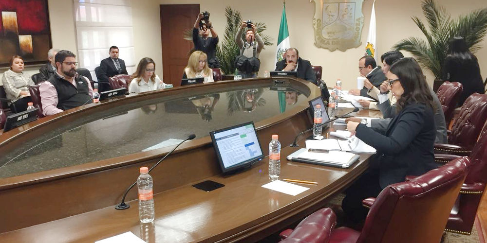
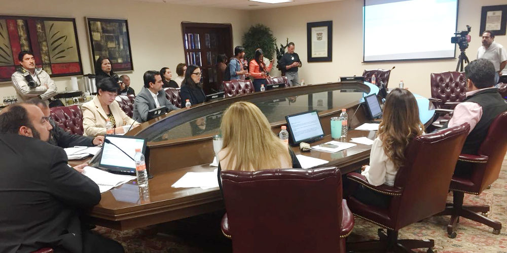

En sesión pública del Comité Coordinador de la Secretaría Ejecutiva del Sistema Estatal Anticorrupción se aprobó el Plan de Trabajo
Consejo de Participación Ciudadana del Sistema Anticorrupción del Estado de Coahuila de Zaragoza
Saltillo, Coahuila. Marzo 15 de 2018.
En sesión pública del Comité Coordinador de la Secretaría Ejecutiva del Sistema Anticorrupción del Estado de Coahuila de Zaragoza, se aprobó el Plan de Trabajo del Comité Coordinador, que entre otras acciones incluye el establecimiento de un mecanismo electrónico para denunciar de manera anónima actos de corrupción.
El Plan aprobado ayer por unanimidad, contempla también la creación de una plataforma digital en la que se integrará la información generada por las instituciones que conforman el Comité Coordinador.
El Comité Coordinador está constituido por la Auditoría Superior del Estado, la Secretaría de Fiscalización y Rendición de Cuentas, la fiscalía anticorrupción, el Instituto Coahuilense de Acceso a la Información, el Tribunal de Justicia Administrativa y el Tribunal Superior de Justicia así como el Consejo de Participación Ciudadana.


Como parte de los programas de trabajo incluidos en el plan presentado ayer, destaca también la construcción de la agenda de riesgos de corrupción en coordinación con las cámaras empresariales y la sociedad civil.
El documento se integra por objetivos estratégicos enfocados en la prevención, detección, control, sanción, disuasión y combate a la corrupción.
La sesión del Comité fue presidida por Manuel Gil Navarro, en representación del Consejo de Participación Ciudadana y contó con la presencia de Teresa Guajardo, Secretaria de Fiscalización; Luis González, Presidente del Instituto Coahuilense de Acceso a la Información; Jesús Homero Flores, Fiscal Anticorrupción; Miriam Cárdenas, Presidenta del Tribunal de Justicia, Sandra Rodríguez Wong, Presidenta del Tribunal de Justicia Administrativa y Luis Carlos García Gil, titular de Asuntos Jurídicos de la Auditoría Superior del estado en representación de Armando Plata.
